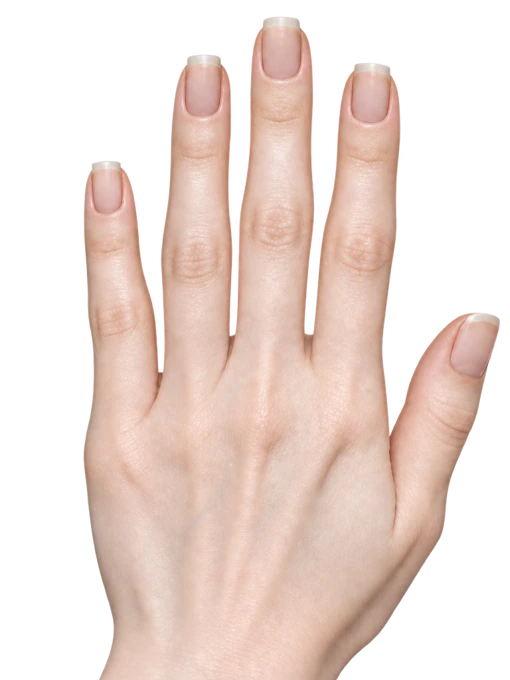
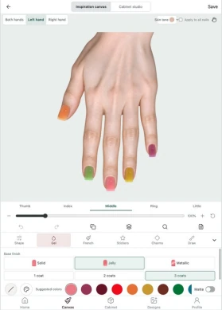
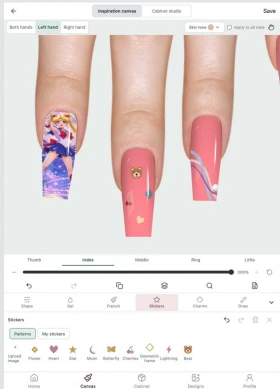
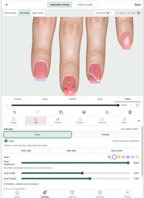

Creative tools · Interactive product prototype
Nailed It!
Creative control, with a clear editing context
Per-finger editing brings shapes, polish layers, decoration, and magnetic effects together. The challenge was to give people precise controls while keeping the selected nail visible.
Role Product concept, interaction requirements, UI decisions, and iterative design review of Codex-assisted implementation.
Try the per-finger editor ↓Interactive demo
Try the per-finger editor
Select a finger, start with a finish, and tune the layers or details while the rest of the set stays in view.

Each finger keeps its own settings.
One canvas, with the selected finger in view
The hand overview shows how the design works as a set. Finger selection makes it possible to focus on a single nail, while tool groups keep the current edit in context.

Build color in layers
Preset materials give people a starting point. Solid color, jelly, and metallic finishes open up coat-level adjustments as needed.

Place artwork on one nail
Zoomed editing makes the placement of individual elements easier. A designer can customize a single nail while keeping the complete set visible.

Refine the magnetic highlight
The original prototype separates the pearl light from other material controls and exposes finer settings for the highlight. The web demo illustrates the effect using angle, width, and brightness controls.
